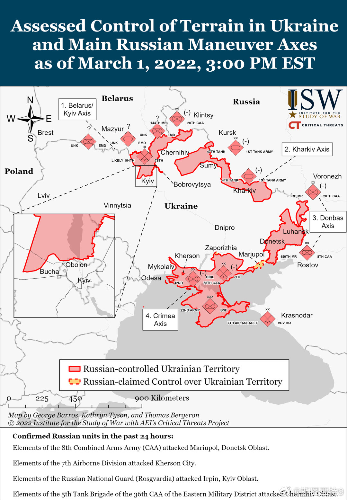

按照各种专家的说法，俄军南面进展比较好，东面（就是两个承认独立的区域）反而进展不好，可能是因为乌克兰这些年准备非常充分。北边的基辅方向进展在两者中间。但现在的情况是，南线东线快打通了。北边两条战线也快打通了，可能切断基辅的补给线并完成合围。战争到了对乌克兰军最关键的时刻。当然下一步还要看看俄军合围基辅之后打算怎么办，真的巷战攻进去吗？不过就像很多人说的，占领基辅也不是战争的结束。俄罗斯怎么处理一个4400万人口已经被激发起民族情绪的国家？
话说，美国人后悔入侵伊拉克有十几年了吧。奥巴马最早积累的政治资本就是反伊战的演讲。特朗普竞选也（撒谎）强调他当年是反对伊拉克战争的。连neocon的坚定奉行者克林顿的老婆希拉里竞选时候也不得不承认当年她投票支持伊拉克战争错了。桑德斯也不停炫耀他当年的反对票。拜登竞选时候也在承认当年的错误。打伊拉克可以说是美国一代人挥之不去的悔恨。所以当听到社交网络上有人说“美国打伊拉克时候你怎么不反对？”的时候，听上去实在是相当奇怪。
虽然明显是whataboutism，但网上将俄罗斯入侵乌克兰比作古巴导弹危机还是让人觉得无比诧异。为此我忍不住又查了几次古巴导弹危机是怎么回事，确保我没有糊涂。的确我记得没错，古巴导弹危机的结果是美国并没有入侵古巴，且承诺不入侵古巴（现在古巴依然是社会主义国家）并撤回意大利和土耳其部署的导弹，换取苏联撤回在古巴的导弹。你要是类比的话，不应该是俄罗斯允许乌克兰加入北约，但北约承诺不往乌克兰部署导弹才对骂？怎么乌克兰加入北约八字还没一撇，北约和美国私下跟俄罗斯说乌克兰加入不了北约的情况下，俄罗斯就出兵要把乌克兰政权更替了呢？你们这whataboutism得让人看得懂才行吗？
Repost@王磬:这几天跟身边的欧洲朋友聊，感觉和一周以前相比完全是两个欧洲了。for years欧盟花了很多预算想要建立所谓的欧洲认同，各种泛欧的文化艺术教育项目，欧盟旗子挂得高高的，但大多数都没啥效果，更像是布鲁塞尔bubble里的人做来自嗨的。欧盟作为一个超国家的机构，它可以（部分）解决政策的问题，但它解决不了认同的问题。没有人会自我认同为“欧盟人”，欧洲也不等于欧盟。那欧洲是什么，欧洲人是谁，欧洲的他者是谁，边界在哪，这些拷问灵魂的话题，for years都没有答案。直到这一仗……